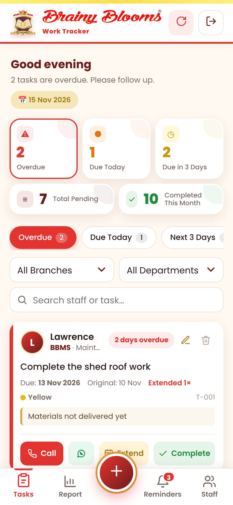
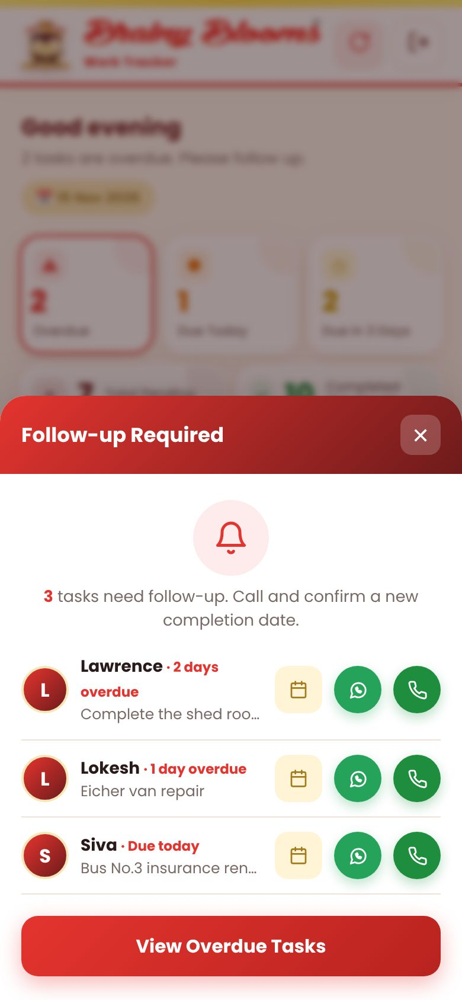

← Back to Jean Kevin D's portfolio
Brainy Blooms Work Tracker
A task follow-up system for a CBSE school group with four branches. Work is assigned, deadlines are tracked, and the chairman is alerted only when something is due. It runs for free on Google Workspace and was in daily use by the office team on the weekend it was built.


Work went down the chain. Nothing came back up.
The chairman assigns work to senior officials, who pass it on to staff in maintenance, transport, accounts and the office. Nobody reports back when a job is done or stuck.
To find out, the chairman was scrolling WhatsApp groups and pasting chats into ChatGPT to ask whether work was finished. A shed repair given 5 days would be checked 10 to 15 days later, by which time everyone had forgotten. Some staff asked for "5 more days" again and again, and there was no record of it.
What he needed was simple: a reminder when work is due, a phone number to call, and a way to see who keeps slipping.
I owned the problem, the decisions and the rollout
I wrote the code with an AI assistant (Claude). My job was everything around it: working out what the school actually needed, deciding what to build and what to leave out, and getting it working for real people.
- Understood the workflowMapped how tasks move between the chairman, officials and four departments, with real cases like vehicle FC renewals and repair quotations.
- Made the product callsWebsite instead of a spreadsheet, English only, PIN login instead of accounts, alerts only when work is due.
- Set up and deployedCreated the Google account, deployed the web app, and fixed real issues such as multi-account login errors.
- Tested and caught bugsReported the PIN error and a cropped logo, and checked every update before the team used it.
- Rolled out to the teamThe office team added their staff and tasks on day one. Updates were shipped without losing any of their data.
- Iterated on feedbackAdded edit options, branches, WhatsApp and reports as the team asked for them.
What it does
Alerts only when work is due
Every morning the system checks pending tasks. If something is due today or overdue, the chairman gets the full details: task, staff, branch, deadline, how many times it was extended, and a phone number. On quiet days, no message is sent.
- Opening the app shows a follow-up list with Call and WhatsApp buttons
- WhatsApp opens with a reminder message already written

Extensions are counted, not argued
When staff ask for more time, the office records a new date with one tap. The original deadline is kept and each extension is counted, so "5 more days" for the third time is visible to everyone. Staff never have to type excuses into the system.
- Cards turn amber, then red, as deadlines pass
- Every date change is logged in a history sheet

Built around four branches
Each task and each staff member belongs to a branch: BBLI, BBCS, BBMS, or BBGS for staff who work across all of them. When you pick a branch while assigning work, only that branch's staff (plus all-branch staff) are offered.
- Branch and department filters on the dashboard
- Edit, reassign or correct a task without breaking its history

Performance reports anyone can read
Each staff member gets a grade (Excellent, Needs attention or Poor) and one plain sentence, for example: "Finished 2 of 4 tasks · none on time · 1 overdue now · asked for more time 3 times." Behind it is a score out of 100 based on on-time completion, extensions, overdue work and speed.
- Monthly view, branch comparison, and a branded PDF for meetings
- Staff with fewer than 3 tasks are not graded, so one bad week does not label anyone

Three free Google pieces, no server to pay for
The website never touches the sheet directly. Every request goes through the back end, which checks the PIN first.
Trade-offs I chose
Free over custom hosting
Google Apps Script with a Sheet costs nothing and needs no maintenance. A paid server would mean a monthly bill and a developer on call for a small school office.
One PIN instead of accounts
Only the chairman and office team use it, so a shared PIN keeps sign-in simple on any phone. The PIN is checked on the server, never in the browser.
Alerts only when due
A daily summary would quickly be ignored. Sending a message only when work is due keeps every alert worth reading.
Count extensions, skip reasons
Asking staff for a reason every time just collects excuses. Counting extensions shows the pattern, and the chairman can still call to ask why.
Shipped in small steps, with the team already using it
- IdeaStarted as a Google Sheet with Telegram reminders. The chairman wanted a website instead.
- First websiteBranded dashboard, PIN login, overdue tracking, extension counts and Green / Yellow / Red ratings.
- Ready for real useSwitched to English only, removed sample data and organised the sheet so the team could start fresh.
- Team feedbackEdit options for staff and tasks, a plain date picker, and alerts only when work is due.
- Multi-branchFour branches, with BBGS meaning all branches, added without moving any existing data.
- WhatsApp and reportsOne-tap WhatsApp reminders and a plain-language performance report with PDF export.

The monthly report as a PDF, ready to print for a staff meeting.
The hard part was not the code
The most useful work was listening: the chairman did not need reasons or long reports, he needed to know who to call today. Shipping updates while the team was already entering real data taught me to test every change against existing data first. And working with AI taught me to be precise about what I want, then check the result myself instead of trusting it.